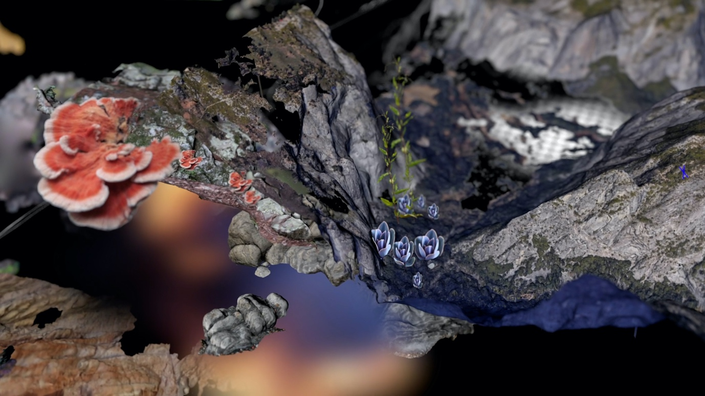
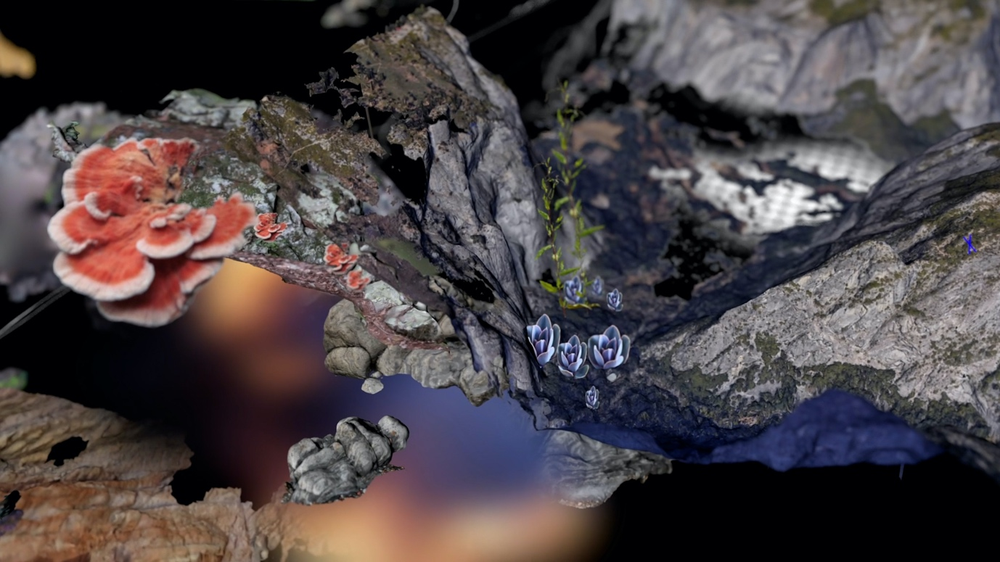

Design Art Technology is a study program that operates at the intersection of design, art and technology.
Our world is increasingly characterised by digital technology: from physical devices such as computers, smartphones, screens and robots to invisible systems that enable our communication such as the internet, data, software, algorithms and artificial intelligence. This technology has a profound impact on our society and our lives. Social media are changing how we represent ourselves and communicate with others. Algorithms influence which information we can and cannot see. Displays and smart technology are changing our behaviour and our environment. Robots and artificial intelligence are even changing what it means to be human.
At Design Art Technology students are challenged to reflect on these changes. They learn to shape our technological world in an innovative and artistic way, and use technology for their own artistic expression. By experimenting with new techniques, investigating how our perception changes, and exploring the problems and possibilities of our digital culture, they respond to current questions from society. The program invites students to ask critical questions - sometimes questions that have not been asked before - and to make people think through their work. As a result, they actively contribute to new creative visions of the future.
Design Art Technology trains a wide spectrum of makers; from designers to autonomous artists. The program focusses on learning to deal with the complexity of our media-technological landscape - in a technical, aesthetic, sociocultural and political sense. As designers and artists, the students of Design Art Technology know how to convert this complexity into critical reflections on, new imaginations of and alternative applications for technological media. They design interactive systems that can take many forms: from websites, videos, (data) visualisations, apps, games and wearables to virtual worlds, machines, instruments and interactive installations. Design Art Technology is therefore a unique study program that challenges its students to shape our new world.
Student work
Within the department, students develop their projects at the cross roads of Design Art and Technology. Below are some examples of student work. While some works more clearly fit one of the three fields, design art and technology are in fact always part of every project.


 
